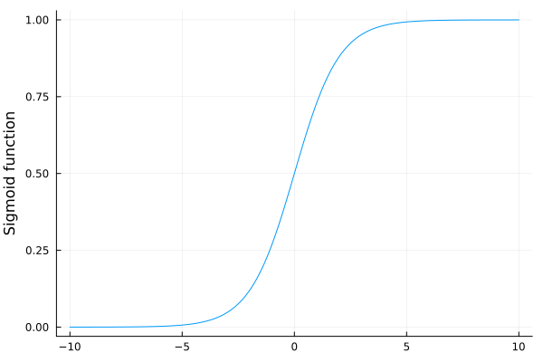

Exercises
The logistic regression on the iris dataset failed in 6 out of 100 samples. But the visualization shows the failure only in 5 cases. How is it possible?
Solution:
We use the iris_reduced dataframe and add the column prediction to it.
df = iris_reduced
df.prediction = σ.(X*w) .>= 0.5Now we show all misclassified samples.
sort(df[df.label .!= df.prediction, :], [:PetalLength, :PetalWidth])| Row | PetalLength | PetalWidth | intercept | Species | label | prediction |
|---|---|---|---|---|---|---|
| Float64 | Float64 | Int64 | Cat… | Bool | Bool | |
| 1 | 4.5 | 1.7 | 1 | virginica | true | false |
| 2 | 4.8 | 1.8 | 1 | versicolor | false | true |
| 3 | 5.0 | 1.5 | 1 | virginica | true | false |
| 4 | 5.0 | 1.7 | 1 | versicolor | false | true |
| 5 | 5.1 | 1.5 | 1 | virginica | true | false |
| 6 | 5.1 | 1.6 | 1 | versicolor | false | true |
A quick look at the image shows that the point $(4.8,1.8)$ is misclassified, but the image shows it correctly. Let us show all such points.
df[(df.PetalLength .== 4.8) .& (df.PetalWidth .== 1.8), :]| Row | PetalLength | PetalWidth | intercept | Species | label | prediction |
|---|---|---|---|---|---|---|
| Float64 | Float64 | Int64 | Cat… | Bool | Bool | |
| 1 | 4.8 | 1.8 | 1 | versicolor | false | true |
| 2 | 4.8 | 1.8 | 1 | virginica | true | true |
| 3 | 4.8 | 1.8 | 1 | virginica | true | true |
As we can see, there are three samples with the same data. Two of them have label 1 and one label 0. Since the incorrectly classified sample was redrawn, it was not possible to see it.
Show that Newton's method fails when started from the vector $(1,2,3)$. Can you guess why it happened? What are the consequences for optimization? Is gradient descent going to suffer from the same problems?
Solution:
First, we run the logistic regression as before, only with a different starting point
log_reg(X, y, [1;2;3])ERROR: SingularException(1)This resulted in an error (or possibly in NaNs for older versions of Julia). When something fails, it may be a good idea to run a step-by-step analysis. In this case, we will run the first iteration of Newton's method
julia> w = [1;2;3];julia> X_mult = [row*row' for row in eachrow(X)];julia> y_hat = 1 ./(1 .+exp.(-X*w))100-element Vector{Float64}: 0.9999724643088853 0.9999724643088853 0.9999815421067044 0.9999322758503804 0.9999750846110607 0.9999589221322353 0.9999815421067044 0.9997515449181605 0.9999628310628971 0.9999387202603833 ⋮ 0.9999969488837513 0.999993209641302 0.999998629042793 0.9999988775548947 0.9999972392350497 0.9999924954984029 0.9999949695696981 0.999997739675702 0.9999917062496261julia> grad = X'*(y_hat.-y) / size(X,1)3-element Vector{Float64}: 2.129852089784904 0.66295432173409 0.49996260866776915julia> hess = y_hat.*(1 .-y_hat).*X_mult |> mean3×3 Matrix{Float64}: 0.000598417 0.00018514 0.000147894 0.00018514 5.80682e-5 4.56733e-5 0.000147894 4.56733e-5 3.73868e-5julia> w -= hess \ grad3-element Vector{Float64}: -10764.590886852531 -1801.6675865928162 31420.070268736363
Starting from the bottom, we can see that even though we started with relatively small $w$, the next iteration is four degrees of magnitude larger. This happened because the Hessian hess is much smaller than the gradient grad. This indicates that there is some kind of numerical instability. The prediction y_hat should lie in the interval $[0,1]$ but it seems that it is almost always close to 1. Let us verify this by showing the extrema of y_hat
extrema(y_hat)(0.9997254218438986, 0.9999994956525918)They are indeed too large.
Now we explain the reason. We know that the prediction equals to
\[\hat y_i = \sigma(w^\top x_i),\]
where $\sigma$ is the sigmoid function. Since the mimimum from $w^\top x_i$
minimum(X*[1;2;3])8.2is large, all $w^\top x_i$ are large. But plotting the sigmoid funtion
xs = -10:0.01:10
plot(xs, σ, label="", ylabel="Sigmoid function")"/home/runner/work/Julia-for-Optimization-and-Learning/Julia-for-Optimization-and-Learning/docs/build/lecture_09/sigmoid.svg"
it is clear that all $w^\top x_i$ hit the part of the sigmoid which is flat. This means that the derivative is almost zero, and the Hessian is "even smaller" zero. Then the ratio of the gradient and Hessian is huge.
The gradient descent will probably run into the same difficulty. Since the gradient will be too small, it will take a huge number of iterations to escape the flat region of the sigmoid. This is a known problem of the sigmoid function. It is also the reason why it was replaced in neural networks by other activation functions.
Show the details for the derivation of the loss function of the logistic regression.
Solution:
Since $\hat y$ equals the probability of predicting $1$, we have
\[\hat y = \frac{1}{1+e^{-w^\top x}}\]
Then the cross-entropy loss reduces to
\[\begin{aligned} \operatorname{loss}(y,\hat y) &= - y\log \hat y - (1-y)\log(1-\hat y) \\ &= y\log(1+e^{-w^\top x}) - (1-y)\log(e^{-w^\top x}) + (1-y)\log(1+e^{-w^\top x}) \\ &= \log(1+e^{-w^\top x}) + (1-y)w^\top x. \end{aligned}\]
Then it remains to sum this term over all samples.
Show that if the Newton's method converged for the logistic regression, then it found a point globally minimizing the logistic loss.
Solution:
We derived that the Hessian of the objective function for logistic regression is
\[\nabla^2 L(w) = \frac 1n \sum_{i=1}^n\hat y_i(1-\hat y_i)x_i x_i^\top.\]
For any vector $a$, we have
\[a^\top x_i x_i^\top a = (x_i^\top a)^\top (x_i^\top a) = \|x_i^\top a\|^2 \ge 0,\]
which implies that $x_i x_i^\top$ is a positive semidefinite matrix (it is known as rank-1 matrix as its rank is always 1 if $x_i$ is a non-zero vector). Since $y_i(1-\hat y_i)\ge 0$, it follows that $\nabla^2 L(w)$ is a positive semidefinite matrix. If a Hessian of a function is positive semidefinite everywhere, the function is immediately convex. Since Newton's method found a stationary point, this points is a global minimum.